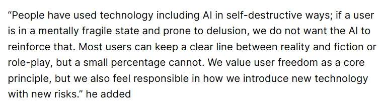
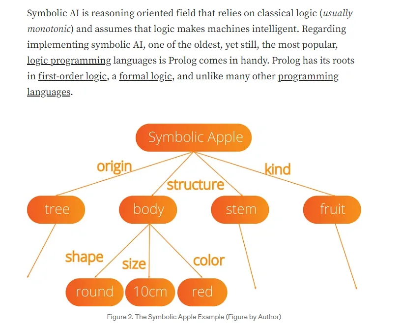
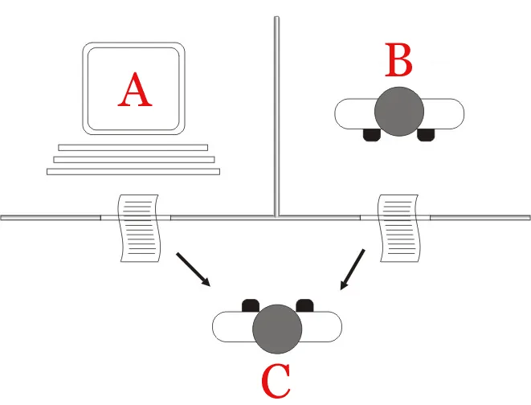
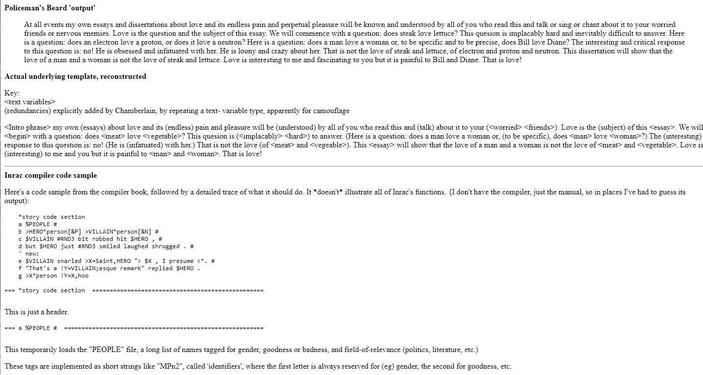
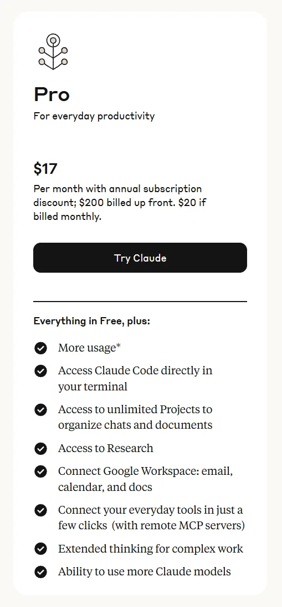

Workshop 1
Introducing AI for DH Pedagogy
Tuesday, May 13, 2026 · 10 AM – noon · CHDR
Part 1
The existential crisis framing
- Plagiarism panics, an AI-detector arms race, faculty caught between adoption pressure and pedagogical challenges.
- "A new app offers to do students' work for them. Professors aren't ready."
The Chronicle of Higher Education — "Will Agentic AI Break Higher Education?"

What is generative AI?
- Per the MLA-CCCC task force: 'computer systems that can produce, or generate, various forms of traditionally human expression — language, images, video, music.'
- Today we're focused on the language part. We touch the others in later workshops.
- Transformer architecture + a vast scraped training corpus + reasoning layers on top.
- MLA-CCCC working paper →

"AI" is a marketing term. It doesn't refer to a coherent set of technologies. Instead, the phrase is deployed when the people building or selling a particular set of technologies will profit from getting others to believe that their technology is similar to humans.
— Emily Bender & Alex Hanna, The AI Con
Hype cuts both ways
- Rosy scenarios: AI 'companions' will take notes, replace ad copy, free us from menial work.
- Worst-case scenarios: Asimov-violating robots; 'superintelligent' takeover.
- Both stories sell the same product — they just sell it differently.
What's actually happening, August 2025
- Sam Altman warns some users are 'using AI in self-destructive ways.'
- ChatGPT-5 'struggled with spelling and geography.'
- The discourse is stuck — but our students are already inside it.

Part 2
Where the LLM came from
The web, digital culture, and networked communication produced a digitized record of human expression at unprecedented scale. That record is the training data.
AI is a field. Deep learning is one method.
- AI = the broad goal of machines with intelligence.
- Machine learning = a subfield where machines learn from data.
- Deep learning = one ML approach among many.
- LLMs are a particular use of deep learning, not the whole field.

The question, 'Can machines think?' should be replaced by 'are there imaginable digital computers which would do well in the imitation game?'
— Alan Turing, 1950

Luddites were not against technology. They were against technologies of control and coercion, and concerned about the loss of jobs, health, and community.
— Industrial-revolution echoes in 2025
Part 3
What an LLM actually is
Parameters, training, inference, in plain language. Then reasoning layers and human feedback. Then the Opus / Sonnet / Haiku family as a concrete example.
Language model, plain version
- A language model assigns probabilities to sequences of tokens.
- Large language models do this with billions of parameters.
- Pretraining is the long, expensive step. Inference is what happens when you type.
- Everything else — RLHF, system prompts, tools — sits on top of the pretrained model.
An LLM is a machine learning model that can complete a sentence of text. Give the model the phrase "the cat sat on the " and it will (almost certainly) suggest "mat" as the next word in the sentence.
As these models get larger and train on increasing amounts of data, they can complete more complex sentences — like "a python function to download a file from a URL is
def download_file(url):".LLMs don't actually work directly with words — they work with tokens. A sequence of text is converted into a sequence of integer tokens, so "the cat sat on the " becomes
[3086, 9059, 10139, 402, 290, 220]. This is worth understanding because LLM providers charge based on the number of tokens processed, and are limited in how many tokens they can consider at a time.
— Simon Willison, How Coding Agents Work
Exercise
Try tokenizing a sentence
Two minutes — take Willison's point off the page:
- Open the OpenAI Tokenizer in a new tab.
- Paste a sentence you'd actually type into Claude or ChatGPT.
- Note the token count and which 'words' the tokenizer splits into multiple pieces.
- Try the same sentence in another language, with a typo, or stuffed with your discipline's jargon. Watch what changes.
A neural net is 'trained' by giving it some (usually random) initial set of weights on the connections between perceptrons, then adjusting them.
— Mitchell, Artificial Intelligence: A Guide for Thinking Humans
We've been here before
- RACTER (1984): the first 'book by a computer' — actually mostly its programmers.
- Atari's The Policeman's Beard Is Half Constructed.
- Every wave of generative text has been sold the same way: as authorship.
- Every wave produced the same critical question: who is doing the labor?

General intelligence is not something that can be measured, but the force of such a promise has been used to justify racial, gender, and class inequality for more than a century.
— Bender & Hanna, on 'humanlike intelligence' framing
ELIZA, 1966
- Weizenbaum's chatbot, posing as a Rogerian therapist.
- Computer scientists used it to celebrate replacing human labor.
- Weizenbaum spent the rest of his life as a critic of AI hype.
- Minsky founded MIT's AI Lab and took Pentagon funding unhindered.
- The two roads from 1966 are still the two roads.
We are trying to do the same thing Weizenbaum tried to do: educate people about how these systems work, dispel the notion that they are thinking machines with a semblance of human understanding, and provide a model of how to think about them instead.
— Bender & Hanna, The AI Con, on the through-line from 1966 to now
Part 4
From chatbot to Project
UCF Copilot is a single-shot chatbot — useful, fast, forgetful. A Claude Project wraps the same kind of model in persistent context and file handling. That's the gentle entry.
What you brought today
- A laptop with a paid Claude Pro subscription (about $60 for three months).
- One document — a syllabus, a paper, a short reading.
- Curiosity about what your version of UCF Copilot has been doing for you, and where it stops.

Live demo
UCF Copilot vs. Claude with a Project
Same prompt. Same document. Two tools. Watch what persistent context changes.
Exercise
Three Conversations
Take one prompt — something you'd actually use in your teaching or research — and run it three ways:
- ELIZA — yes, really. Spend at least ten minutes; notice where it breaks.
- UCF Copilot — run the same prompt cold.
- A Claude Project with one document uploaded as context — run it again.
- Document what differs. Save screenshots. Bring the comparison back to the group.
Three things to leave with
After today you should be able to explain to a colleague: where this thing was trained, what a chatbot does, what persistent context adds, and why you'd pick one tool over another for an assignment.